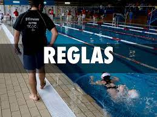
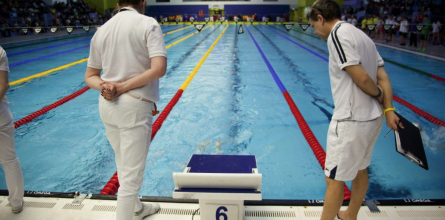
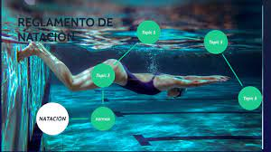

Todo deporte tiene sus reglas y la natación no es la excepción, el reglamento de la natación consiste en una serie de normas, técnicas y procedimientos que deben ser acatados y respetados por todos los participantes que se encuentren en una competencia de natación.
Existen cuatro estilos de natación: crol, estilo de braza o pecho, estilo mariposa y estilo espalda. Cada uno de ellos cuenta con normas y procedimientos específicos, los cuales deben ser realizados por los competidores dependiendo del estilo en el que estén especializados.
El reglamento de la natación escrito por la Federación Internacional de Natación (FINA), contiene todas las pautas correspondientes que son necesarias para que las competencias sean limpias y organizadas. El tamaño adecuado de la piscina, los accesorios obligatorios de los competidores, el tiempo que se dura dentro y fuera de la piscina, los movimientos y las técnicas, son algunas de las normas que contiene el reglamento de la natación. A continuación, te diremos algunas reglas generales que todos los competidores deben saber y acatar independientemente del estilo de nado que estén realizando.

1. Respetar el orden y el tiempo de partida es crucial, pues así es como se dará pie a la competencia.
2. Tomar siempre la posición correcta de salida.
3. Cumplir con los metros correspondientes designados en la competencia.
4. Los movimientos de los brazos deben ser simultáneos siguiendo un plano horizontal.
5. Independientemente del estilo, los dedos siempre deberán ser los que impulsen primero.
6. Al completar cada secuencia, el cuerpo del nadador debe tocar la pared.
7. La espalda se debe mantener plana, la cabeza baja y las nalgas altas.
8. El traje de baño debe ser siempre el adecuado para la competencia.
9. Una vez finalizada la carrera, el nadador debe permanecer en el agua con la espalda hacia la pared.
10. El nadador debe contar con los accesorios mínimos necesarios, gorro y lentes, sino no podrá competir.

En la natación, existen dos tipos de competencias: las individuales y las de relevo, las de relevo están conformadas por cuatro competidores y combinan todos los estilos de nado.
En el reglamento de la natación están descritas de manera específica los lineamientos de cada tipo de competencia, desde los tipos de jueces hasta las técnicas a utilizar.
Existe una disciplina que también es realizada en la piscina, esta es el nado sincronizado, consiste en realizar una coreografía artística dentro de la piscina, puede ser hecha de forma individual, en dúo o en grupo de hasta ocho chicas. Es un deporte multidisciplinario que combina el ballet, la gimnasia y la expresión corporal. El nado sincronizado tiene tres tipos de rutinas: rutina técnica, combinada y rutina libre. Las rutinas técnicas y combinadas deben tener un número específico de posiciones a realizar de acuerdo con el reglamento de la FINA.
